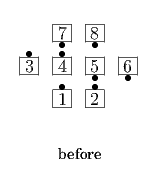
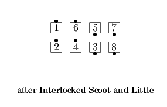
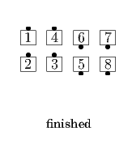

From a Generalized 1/4 Line or other applicable formations: Interlocked Little; centers Box Circulate. A Generalized 1/4 Line ends in Parallel Lines.
From a 1/4 Line: Interlocked Scoot Back, then Interlocked Little More or Left Interlocked Little More, according to the hand with which the Interlocked Scoot Back was done. Ends in Parallel Two-Faced Lines.
  
© Copyright 2004-2017 Vic Ceder and CALLERLAB Inc., The International Association of Square Dance Callers. Permission to reprint, republish, and create derivative works without royalty is hereby granted, provided this notice appears. Publication on the Internet of derivative works without royalty is hereby granted provided this notice appears. Permission to quote parts or all of this document without royalty is hereby granted, provided this notice is included. Information contained herein shall not be changed nor revised in any derivation or publication.